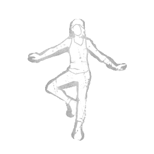

平稳落地 Balanced Landing
所属：内亚·卡尔森（逃生者）
| 等级 | 档位 1 | 档位 2 | 档位 3 |
|---|---|---|---|
| 数值 | 60 1 | 50 | 40 |
描述
"你的敏捷与猫一般的反应能力无可比拟。"从高处坠落时，你将获得以下效果：抑制所有与坠落和着陆相关的噪音。着陆时的蹒跚状态持续时间减少75%。获得持续3秒的+50%急速状态效果。筋疲力尽状态下无法使用平稳着陆。平稳着陆在使用后会造成筋疲力尽状态效果，持续60/50/40秒。"我曾从更高的地方跃下。"——妮娅·卡尔森

所属：内亚·卡尔森（逃生者）
| 等级 | 档位 1 | 档位 2 | 档位 3 |
|---|---|---|---|
| 数值 | 60 1 | 50 | 40 |
"你的敏捷与猫一般的反应能力无可比拟。"从高处坠落时，你将获得以下效果：抑制所有与坠落和着陆相关的噪音。着陆时的蹒跚状态持续时间减少75%。获得持续3秒的+50%急速状态效果。筋疲力尽状态下无法使用平稳着陆。平稳着陆在使用后会造成筋疲力尽状态效果，持续60/50/40秒。"我曾从更高的地方跃下。"——妮娅·卡尔森